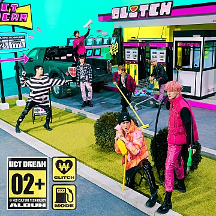
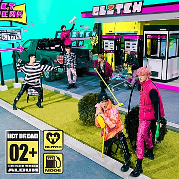

NCT DREAM의 컴백
NCT DREAM 정규 2집 'Glitch Mode' 발매! 타이틀 곡 '버퍼링 (Glitch Mode)' 포함 다채로운 장르의 총 11곡 수록!
NCT DREAM 정규 2집 'Glitch Mode'는 타이틀 곡 '버퍼링 (Glitch Mode)'을 비롯한 총 11곡이 수록되어, NCT DREAM의 개성 있는 음악 색깔을 만나기에 충분하다.
NCT DREAM 정규 2집 'Glitch Mode' 발매! 타이틀 곡 '버퍼링 (Glitch Mode)' 포함 다채로운 장르의 총 11곡 수록!
NCT DREAM 정규 2집 'Glitch Mode'는 타이틀 곡 '버퍼링 (Glitch Mode)'을 비롯한 총 11곡이 수록되어, NCT DREAM의 개성 있는 음악 색깔을 만나기에 충분하다.